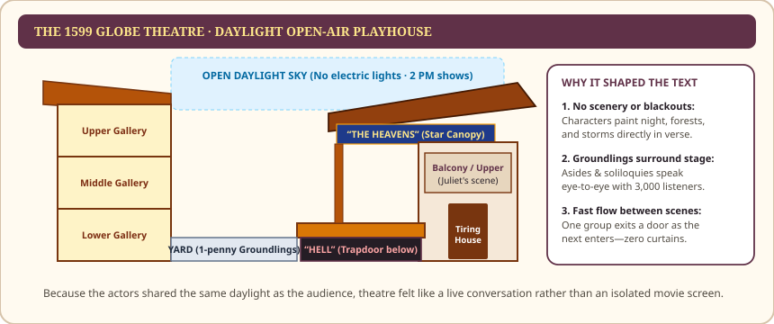
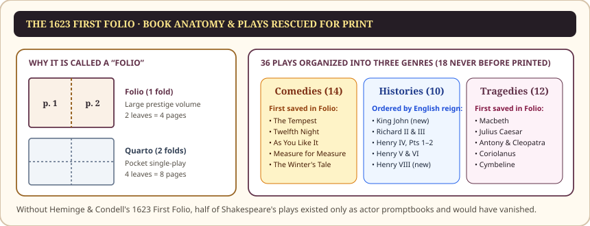
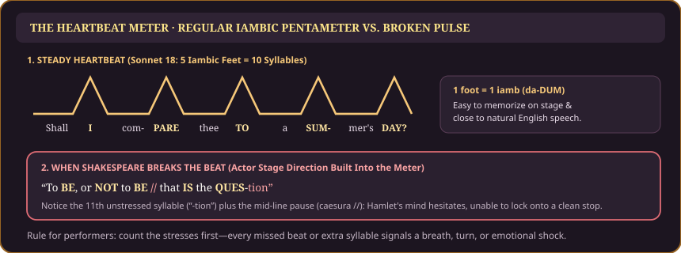
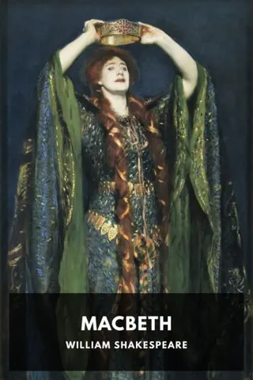

London (c. 1599)
A booming port of about 200,000 people. Plays competed directly with street markets, river ferries, church bells, and bear-baiting arenas for a crowd’s attention.
Language & Literature · Pioneers · Drama & Verse · Grades 6–12
Words Made for the Stage · 1564–1616
His plays were not written to sit quietly on library shelves. They were built to be shouted, whispered, interrupted, and performed in broad daylight before three thousand listeners in open-air wooden playhouses—and nine of those plays are waiting in our site library right now.
Guiding question: How do an open-air stage, a ten-beat pulse, and a single actor’s pause turn ink on paper into live human tension?

1 · Stratford, London & Beyond
Shakespeare moved from a provincial glove-maker’s household to London’s busiest theatrical company, writing for open-air stages, royal courts, and surviving centuries of print—all the way to Abraham Lincoln’s reading desk in 1863.
2 · Architecture & Print
Before reading a single speech, picture the physical building and the printing press that shaped how Shakespeare wrote—and why half his plays nearly disappeared.
A booming port of about 200,000 people. Plays competed directly with street markets, river ferries, church bells, and bear-baiting arenas for a crowd’s attention.
Up to 3,000 spectators stood in the open yard for a penny or sat in three covered wooden galleries. Afternoon shows ran in daylight with no curtains or microphones.
Seven years after Shakespeare died, actors John Heminge and Henry Condell gathered 36 plays into one volume. Without them, Macbeth and The Tempest would be lost.


Disguises, mistaken identity, and tangled love resolving in celebration (Midsummer, Twelfth Night, Much Ado).
Ambition, jealousy, or hesitation drives a character past the point of return (Macbeth, Hamlet, Julius Caesar, Romeo and Juliet).
Rival kings and nobles wrestle over England’s throne and national memory (Henry V, Richard III).
Shipwrecks, wonder, and reconciliation after long loss—blending tragic stakes with comic restoration (The Tempest).
3 · Interactive Lab 1
Most of Shakespeare’s stage verse runs on iambic pentameter: five pairs of syllables following a human heartbeat—da-DUM, da-DUM, da-DUM, da-DUM, da-DUM (10 syllables total). Listen to steady lines first, then compare what happens when Hamlet or Antony breaks the pattern.
Click any syllable tile—or press Play Heartbeat—to hear where the pulse lands.

4 · Interactive Lab 2
Shakespeare didn’t just borrow old stories—he fused nouns into verbs, glued words into crisp compounds, and spun everyday idioms that English speakers still use four centuries later. Filter by craft technique and click any card to inspect its origin in one of our library plays.
Showing 8 of 8 expressions
“What hempen home-spuns have we swaggering here, / So near the cradle of the fairy queen?”
How Shakespeare forged it: Puck turns a dialect noun/verb for swaying or rocking into a vivid picture of boastful strutting in front of Titania’s bower.
Today’s meaning: To walk or behave with confident, flashy, or boastful flair.
5 · Interactive Lab 3
Shakespeare left almost no emotion labels in his scripts. Instead, an actor’s pacing, volume, and eye contact decide what the scene means. Pick one of three scenes from our library plays and test how different directing choices transform the text.
Macbeth · Act 1, scene 7
“If it were done // pause when ’tis done, then ’twere well
It were done quickly.”
Director’s Note (Afraid): Pause after the first “done.” Let “quickly” escape as a desperate wish to outrun guilt. Notice how the triple chime of “done / ’tis done / done” echoes like a clock he cannot stop.
Discussion Question: Which delivery makes Macbeth seem more dangerous: shaking with terror, or cold and matter-of-fact? Try reciting the line both ways with a partner.
6 · ClassroomOS Site Library
Every play below lives on the Shakespeare on Stage, Presidential Favorites, and Drama shelves of the ClassroomOS Library. Open any play directly in the built-in ClassroomOS Reader (with search, bookmarks, annotations, and read-aloud) or jump straight to its library shelf card.
Showing 9 of 9 plays in the ClassroomOS Library
c. 1595 · Enchanted wood & play-within-a-play
Four runaway lovers, mischievous fairies, and a troupe of amateur craftsmen collide on midsummer eve. One of the easiest, funniest doors into Shakespeare’s stage.
Try Act 1, scene 2: Assign one student to cast the play and another to play Bottom, who tries to act every single role by voice alone.
c. 1595 · Sonnet dialogue & feuding families
The Chorus announces the tragic ending in the very first fourteen lines—turning suspense into a race against time, secrets, and missed messages.
Try Act 1, scene 5: Read the lovers’ first conversation in two voices and mark the rhyming words where two strangers finish one shared sonnet.
c. 1599 · First printed 1600 · Wordplay & eavesdropping
Beatrice and Benedick wage a rapid-fire battle of wits while their friends stage fake conversations to trick them into admitting they care.
Try Act 2, scene 3: Place Benedick in plain view of the audience while his friends speak loudly nearby—how does silent reaction steal the scene?
c. 1599 · Leadership, conscience & imagination
A young king leads an outnumbered, exhausted army into France, asking the audience to supply horses, armor, and battlefields with their own imaginations.
Try the Opening Chorus: Give one speaker the speech and three actors an empty floor—which verbs make the room see an army?
c. 1599 · First Folio · Rhetoric & power
Conspirators assassinate Rome’s ruler to save a republic—then hand the public funeral microphone to Mark Antony, triggering civil war.
Try Act 3, scene 2: Give Brutus and Antony a speaker each and make the class the Roman crowd—mark the exact line where loyalty shifts.
c. 1600 · Presidential Favorite · Conscience & acting
A grieving prince meets his father’s ghost and uses a traveling troupe of actors to test the king’s guilt. Rich in soliloquies and stagecraft within a play.
Try Act 3, scene 2: Read the scene where Hamlet coaches the traveling actors—why does a prince care so much about how a line is delivered?
c. 1601 · First Folio · Twins, music & disguise
Shipwrecked twins wash ashore in Illyria, setting off disguised identities, forged letters, and a comic puzzle where everyone falls for the wrong person.
Try Act 2, scene 2: Read Viola’s ring soliloquy twice—on the second pass, pause at the exact word where she solves the riddle.

c. 1606 · First Folio · Ambition & guilt
Three witches, one prophecy, and a chain of murders. Shakespeare’s shortest, fastest tragedy—available in Standard Ebooks & Gutenberg typography in our Reader.
Try Act 1, scene 7 & Act 2, scene 3: Compare Macbeth’s private soliloquy with the Porter’s knock-knock scene right after the crime.
c. 1610 · First Folio · Storm, music & mercy
An exiled duke raises a tempest to shipwreck his rivals on an enchanted island—then faces the harder choice between revenge and forgiveness.
Try Act 1, scene 1: Build the storm soundscape with paper, breath, and fingertips—can listeners hear when the boatswain takes command?
Library Connection · Presidential Favorites: In an August 17, 1863 letter to Shakespearean actor James Hackett, President Abraham Lincoln wrote that he read Hamlet, Macbeth, and Richard III repeatedly—adding, “I think nothing equals MacBeth.”
Read Lincoln’s 1863 Letter (LOC PDF) ↗Open A Midsummer Night’s Dream in our Reader (jump to Act 3, scene 1). Watch amateur actors rehearse in enchanted woods until Puck transforms one of them.
Look for: How do stage directions and sound cues drive physical comedy without modern props?
Open Romeo and Juliet in our Reader (start with the Prologue). In fourteen lines of a sonnet, the Chorus reveals the ending before Act 1 even begins.
Look for: How does knowing the ending create intense dramatic irony rather than spoiling the story?
Exit Ticket: Open any of the 9 plays in the Reader, copy three lines into your notebook, mark the stressed syllables (DUM), and write one stage direction telling an actor where to pause or look at the audience.
7 · Stage Vocabulary
Soliloquy vs. Monologue
A soliloquy is spoken alone on stage, letting the audience overhear private thoughts. A monologue is a long speech delivered to other characters in the room.
The Aside
A brief remark whispered directly to the audience that other characters on stage pretend not to hear—building a secret alliance with the groundlings.
Dramatic Irony
When the audience knows a crucial truth a character does not—such as knowing Juliet’s potion is temporary while Romeo believes she is dead.
Verse vs. Prose
Kings and lovers often speak in rhythmic verse (iambic pentameter); clowns, workers, letters, and characters losing self-control often shift into prose.
Caesura & Feminine Ending
A caesura is a mid-line pause (//) for breath or doubt; a feminine ending adds an extra 11th unstressed syllable—famously heard in Hamlet’s “QUES-tion.”
Quarto vs. Folio
A quarto folded a sheet twice into a cheap single-play booklet; the 1623 First Folio folded sheets once into a large prestige archive of 36 plays.
Shakespeare’s poems and plays were printed in the 1600s in the sturdy, slightly uneven types of London’s print shops. Read these passages slowly and aloud, feeling where the breath and beat fall.
hall I compare thee to a summer’s day? Thou art more lovely and more temperate: Rough winds do shake the darling buds of May, And summer’s lease hath all too short a date. William Shakespeare, Sonnet 18, lines 1–4 (1609 Quarto)
Thou and thee were the close, familiar form of “you.” Temperate means gentle and steady, neither harsh nor fleeting.
Be not afeard; the isle is full of noises, Sounds, and sweet airs, that give delight, and hurt not. William Shakespeare, The Tempest, Act 3, scene 2 (1623 First Folio)
Afeard means afraid. Caliban describes the island’s invisible music—one of the plays you can open in full above.
O for a Muse of fire, that would ascend The brightest heaven of invention, A kingdom for a stage, princes to act And monarchs to behold the swelling scene! William Shakespeare, Henry V, Prologue, lines 1–4
Before electric lights or painted backdrops, the Chorus invites the audience’s imagination to build a royal battlefield out of spoken imagery.
Beyond our 9 site-library plays (more classics to explore later)
c. 1599 · First Folio
Exiles flee to the Forest of Arden and reinvent themselves. Home to Jaques’s famous speech, “All the world’s a stage.”
c. 1594 · First Folio
Two sets of identical twins separated at birth collide in one frantic afternoon—Shakespeare’s shortest play and a swift stage farce.
1609 Quarto
154 poems of exactly fourteen lines in iambic pentameter, closing with a final rhyming couplet that snaps the thought shut.
9 · Check Your Understanding
10 · Archive & References
Related ClassroomOS lessons: Omar Khayyam: The Tentmaker of Science & the Rubáiyát · Edgar Allan Poe: Sound, Suspense & the Uncertain Narrator · Arnaut Daniel: The Sestina Workshop.